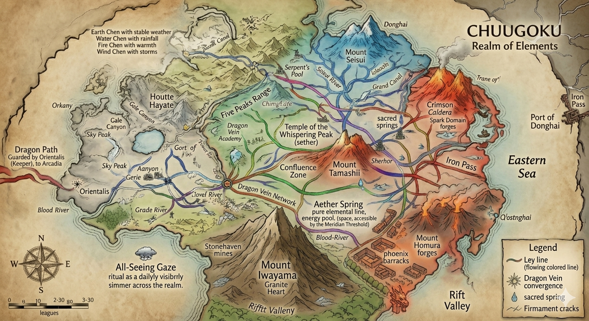

The Dragon Throne — Where Elemental Harmony Meets Imperial Mandate

The Realm of Elements — spanning ley lines, sacred springs, and the five elemental territories
The Empire of Chuugoku stands as the largest and most populous nation in the Eastern Plane, a vast realm built upon ancient traditions, elemental mastery, and the divine mandate of the Dragon Throne. Governed by a unique dual authority—the Celestial Emperor and the High Lama—Chuugoku represents the harmonious union of temporal power and spiritual wisdom.
The empire's origins trace back to the Primordial Era, when the Five Primal Shapers—beings of pure elemental energy—taught early humans to harness fire, water, earth, air, and spirit. These teachings evolved into the Five Great Houses that form the foundation of Chuugoku society: Homura (Fire), Seisui (Water), Iwayama (Earth), Hayate (Wind), and Tamashii (Spirit).
The Dragon Throne itself emerged from the Covenant of Lies (Abs. 2,584), when the ancestors of modern Chuugoku negotiated for the eastern territories rich in elemental ley lines. Over millennia, the empire developed its sophisticated system of Elemental Legions, where warriors train from childhood to master specific elements, creating military forces of unparalleled specialization and power.
Primordial Origins (Abs. 1,200-2,584): The foundations of Chuugoku were laid when the Five Primal Shapers descended from the elemental planes to teach humanity. These beings—Ignis (Fire), Aqua (Water), Terra (Earth), Ventus (Wind), and Anima (Spirit)—established the first elemental academies in what is now the Imperial Heartland.
The Covenant of Lies (Abs. 2,584): Chuugoku's ancestors were the most skeptical of the Covenant's signatories, insisting on clauses preserving their elemental traditions. They secured the eastern territories specifically because of their dense elemental ley lines.
First Unification (Year 800 / Abs. 3,385): The First Emperor united the warring elemental clans under a single banner, establishing the principle that "the Dragon Throne rises above all elements."
The Lama Integration (Year 1,500 / Abs. 4,085): The High Lama was formally recognized as co-ruler, establishing the dual governance system after a century of spiritual unrest.
Modern Era: The empire has maintained relative stability for over 7,000 years, weathering Abyssal incursions, internal rebellions, and external conflicts. The current tension with the Root Sanctuary represents the most significant spiritual challenge since the Lama Integration.
The Dragon Throne (Dual Authority):
The Five Great Houses:
Elemental Hierarchy: Social structure partially determined by elemental affinity. Those showing strong attunement to any element receive training and status regardless of birth, creating social mobility unavailable in more rigid caste systems.
Elemental Balance Philosophy: The core mental framework teaches that all five elements must exist in harmony. Imbalance—whether personal or societal—leads to catastrophe. Citizens are taught to recognize their dominant element and cultivate its opposite to achieve inner balance.
Fivefold Meditation: Daily practice cycling through elemental visualizations—flame, water, stone, wind, and spirit. This is believed to maintain mental equilibrium and prepare the practitioner for any challenge.
Pathology: Elemental Obsession: The primary psychological risk is fixation on a single element to the exclusion of others. This manifests as extreme personality traits: Fire-Obsession (uncontrolled rage), Water-Obsession (emotional instability), Earth-Obsession (paralysis), Wind-Obsession (inability to commit), Spirit-Obsession (disconnection from reality).
Ancestor Veneration: Mental health includes maintaining connection to ancestral wisdom. Those who lose this connection are considered spiritually ill and receive treatment from House Tamashii specialists.
Elemental Worship: The Five Primal Shapers are venerated as divine teachers rather than gods. Temples to each Shaper exist throughout the empire, with the Great Temples at the elemental academies serving as major pilgrimage sites.
The Dragon Spirit: The Emperor is believed to house the Dragon Spirit, a divine essence passed down through the imperial line. The High Lama confirms each Emperor's possession of the Dragon Spirit during coronation rituals.
Root Sanctuary Conflict: The current spiritual crisis involves the Root Sanctuary, a reclusive order claiming direct connection to the World Tree's roots. They challenge the High Lama's authority, arguing that true spiritual wisdom comes from the earth itself rather than celestial teachings.
Primary Ethereals: While the Primal Shapers are venerated, active worship focuses on Ethereals aligned with elemental principles. Kigen (the World Tree's eastern aspect) receives particular devotion as the empire's protector.
Elemental Affinity System: Social status is partially determined by elemental attunement:
Family Structure: Extended families often share elemental affinity, creating elemental "clans" within the larger Houses. Inter-elemental marriages are encouraged to promote social harmony.
Gender Dynamics: Elemental affinity transcends gender, allowing women to rise to any position including House Head and Imperial Council member. However, the Emperor has always been male, while the High Lama's gender varies by reincarnation.
Elemental Arts: Each House has developed distinct artistic traditions:
Martial Traditions: Each House maintains distinct martial arts styles based on their element. The annual Elemental Tournament brings champions from all Houses to compete in non-lethal combat.
Cuisine: Regional cuisines reflect elemental associations—spicy southern dishes (Fire), delicate eastern seafood (Water), hearty central stews (Earth), light northern fare (Wind), and ceremonial foods (Spirit).
Currency System:
House-Based Economy: Each Great House controls specific economic sectors aligned with their element—Homura (metallurgy, glasswork), Seisui (fishing, shipping, healing), Iwayama (mining, construction, agriculture), Hayate (transportation, communication), Tamashii (spiritual services, divination).
Imperial Taxation: Citizens contribute 8% to imperial treasury, 4% to their House, and 2% to spiritual maintenance—relatively light taxation reflecting the empire's economic strength.
Elemental Adaptation: Citizens living in elemental territories show physiological adaptations over generations—heat tolerance (Fire), breath-holding (Water), bone density (Earth), lung capacity (Wind).
Elemental Affinity Manifestation: Physical markers include warm skin and red-tinged eyes (Fire), cool touch and fluid movements (Water), solid build and grounded stance (Earth), light step and quick reflexes (Wind), unusual eye color and distant gaze (Spirit).
Lifespan: Average 120 years, with elemental practitioners often living longer. Spirit-affinity individuals sometimes live 200+ years.
Elemental Sickness: Imbalance can cause physical illness—Fire-sickness (fever), Water-sickness (edema), Earth-sickness (paralysis), Wind-sickness (tremors), Spirit-sickness (disconnection).
Imperial Heartland: Central territory containing the capital, Imperial Palace, and the Dragon Throne itself. Governed directly by the Emperor and High Lama. Population 15 million.
House Territories:
Dragon Capital: The imperial seat housing the Dragon Throne Complex, five elemental quarters, and the Great Ley Nexus. Built at the convergence of all five elemental ley lines, making it the most spiritually charged location in the Eastern Plane.
City Map — Dragon Capital

Detailed cartography showing the five elemental quarters — Homura (Fire), Seisui (Water), Iwayama (Earth), Hayate (Wind), and Tamashii (Aether) — along with the Dragon Throne Complex, Imperial Gardens, Jade Market, Chi-Barrier Wall, Temple of the Whispering Peak, Dragon Gate Tower, Serpent's Canal, Crimson Caldera Forges, Phoenix Barracks, and the Confluence Academy.
Key Districts (from map):
Notable Landmarks: Dragon Throne Chamber (coiled dragon spire), Chi-Barrier Wall, Temple of the Whispering Peak, Dragon Gate Tower, Imperial Gardens, Grand Imperial Gardens, Rift Valley Watchtower, Pilgrim's Way to Arcadia, Iron Pass to Dark Realm, and the Dragon Path (chi-current road) connecting all quarters.
Elemental Engineering: Technology in Chuugoku is primarily elemental-based: Fire-Technology (forge-craft, glasswork), Water-Technology (irrigation, hydraulic systems), Earth-Technology (construction, mining), Wind-Technology (communication, transportation), Spirit-Technology (wards, divination).
Ley Line Harnessing: Sophisticated methods for tapping elemental ley lines for power, healing, and communication. The Great Ley Nexus in the Imperial Heartland powers the capital's elemental systems.
Elemental Weapons: Military technology focuses on channeling elemental energy—flame-swords, water-whips, earth-hammers, wind-blades, and spirit-staves.
Transportation: Elemental-assisted travel includes wind-gliders, water-current boats, and earth-tunneling. The elite use spirit-stepping for near-instantaneous short-range travel.
The Elemental Legions: Chuugoku's military is organized into specialized legions:
Imperial Guard: Elite force of dual-affinity soldiers capable of wielding two elements simultaneously. Only 5,000 members, but each equals ten ordinary soldiers.
Current Tensions: The Root Sanctuary conflict has split loyalties within the Legion of Spirits, with some units refusing to act against their spiritual brethren. This internal division represents the greatest military threat the empire has faced in millennia.
The Root Sanctuary's challenge to the High Lama's authority threatens to split Chuugoku along spiritual lines. If the conflict escalates, it could:
The empire's stability depends on maintaining the balance between temporal and spiritual authority—a balance the Root Sanctuary explicitly rejects. Resolution requires either reconciliation or decisive action, neither of which appears imminent.
Seat of the Dragon Throne, housing both Imperial Palace and High Lama's Temple. Population 15 million. Contains the Great Ley Nexus. — See detailed city map above
Prestigious institutions training elemental practitioners. Each Academy is located at a major ley line nexus aligned with its element.
Remote mountain complex housing the reclusive order challenging High Lama's authority. Controls access to deep ley line confluences.
Fortified regions protecting against external threats. Garrisoned by mixed-elemental legions under imperial command.
Sacred sites maintained by House Tamashii where citizens commune with ancestors. Major pilgrimage destinations.
Each Great House maintains a fortified stronghold in their territory—administrative centers, military bases, and cultural repositories.
Chuugoku — Full territorial extent with ley lines
View full sizeDragon Capital — Five elemental quarters & imperial landmarks
View full size